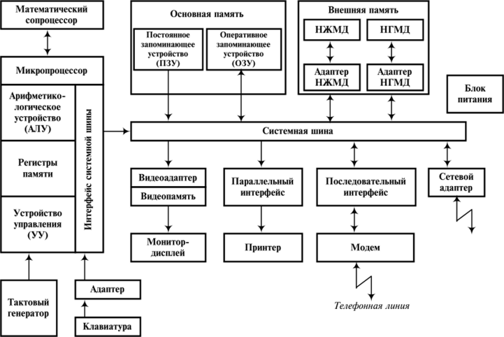
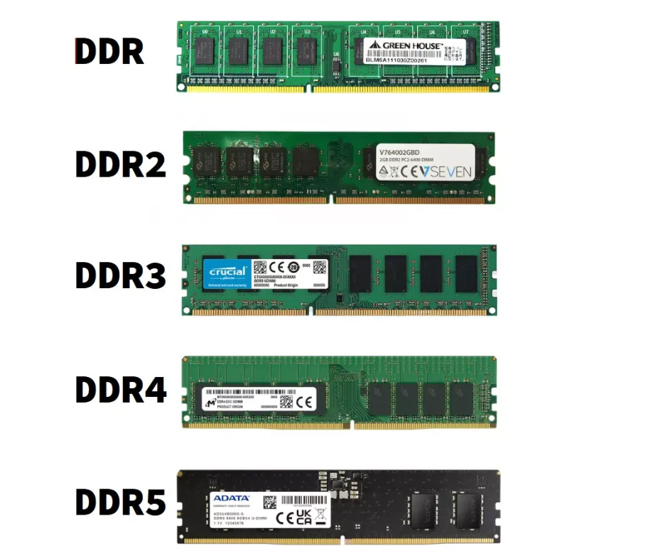
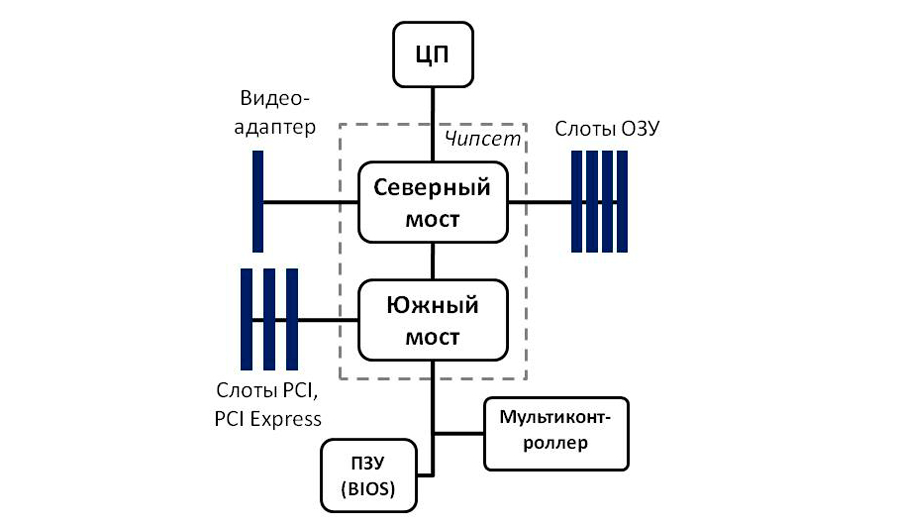
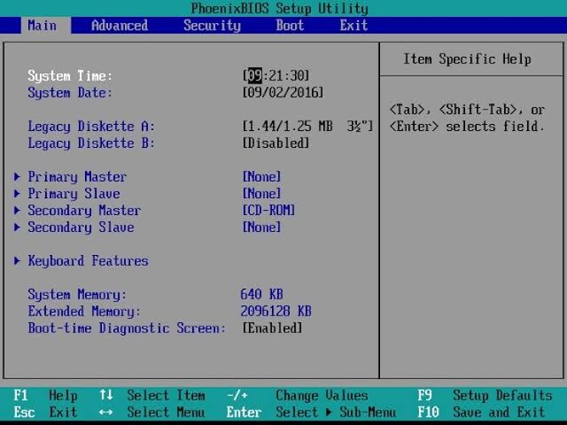

Тема 3 учебного плана · 2 академических часа · очная форма обучения. Полный текст лекции — в модальном окне с последнего слайда. По каждой теме приведены рекомендации по выбору устройства и ссылки на российские источники.
Тема · Устройство ПК
Система персонального компьютера: состав, принцип работы и подбор комплектующих
Рассматриваются основные компоненты персонального компьютера — материнская плата, центральный процессор, оперативная память, чипсет, накопители и системы BIOS/CMOS. Помимо устройства, поясняются рекомендации по выбору каждого компонента и приводятся три варианта готовых сборок для разных задач.
Состав и взаимосвязь компонентов персонального компьютера
Персональный компьютер — совокупность аппаратных средств, объединённых системной архитектурой. Устройство системы удобно изучать, прослеживая пути передачи данных между процессором, памятью и периферией.
Основные блоки ПК
Системный блок — материнская плата, процессор, память, накопители и блок питания.
Устройства ввода — клавиатура, мышь, сканер, микрофон.
Устройства вывода — монитор, принтер, акустическая система.
Устройства хранения — жёсткие диски (HDD) и твердотельные накопители (SSD).

Структурная схема персонального компьютера
Компонент 1
Материнская плата
Системная (материнская) плата — основная печатная плата компьютера, объединяющая все его компоненты.
Назначение и роль в системе
Материнская плата является той основой, на которой строится вся вычислительная система: именно по её проводникам (дорожкам печатной платы и внутренним шинам) данные перемещаются между процессором, памятью и периферийными устройствами. Конструктивно плата выполнена из многослойного текстолита, поверх которого размещены разъёмы, микросхемы и цепи электропитания.
Принципиально важно, что плата задаёт не только физическое расположение компонентов, но и логику их взаимодействия: тип реализованных шин, число доступных слотов и портов, а также поколение поддерживаемых процессоров и памяти. Таким образом, выбор платы фактически определяет верхнюю границу возможностей всей будущей системы и одновременно ограничивает её совместимость.
Назначение
Физическое размещение процессора и модулей памяти.
Подключение плат расширения и периферийных устройств.
Распределение электропитания и передача данных.
Ключевые элементы
Сокет процессора, слоты для памяти (DIMM).
Чипсет и системные контроллеры.
Шины данных, разъёмы SATA/M.2, порты ввода-вывода.
Рекомендации по выбору
Сокет платы должен обязательно соответствовать сокету выбранного процессора.
Чипсет должен обеспечивать поддержку нужного типа памяти и нужного числа разъёмов.
Формат (ATX, micro-ATX, mini-ITX) подбирается под размер корпуса и планируемое число плат расширения.
Желательно предусмотреть запас слотов и портов для будущей модернизации.
Важно понимать, что первым выбирается процессор, а уже под его сокет и требования — материнская плата. Следует обращать внимание на тип слота памяти (DDR4 или DDR5), количество слотов M.2 и SATA для накопителей, наличие современного слота видеокарты PCI Express, а также на количество портов USB и сетевого разъёма. Формат платы должен физически помещаться в выбранный корпус: для компактных корпусов применяются платы micro-ATX и mini-ITX, для просторных — полноразмерные ATX. Учёт этих параметров позволяет избежать несовместимости и обеспечивает возможность дальнейшей модернизации.
Центральный процессор (CPU) — устройство, выполняющее арифметические, логические и управляющие операции.
Принцип работы
Процессор является вычислительным ядром системы: он последовательно считывает из памяти машинные команды, декодирует их и выполняет арифметические и логические операции над данными. Каждый такт работы микросхемы соответствует одному элементарному действию, поэтому тактовая частота, измеряемая в гигагерцах, напрямую связана с быстродействием.
Современные процессоры содержат несколько вычислительных ядер, каждое из которых способно исполнять команды независимо от других, что позволяет параллельно обрабатывать несколько задач. Внутренняя кэш-память (L1, L2, L3) служит сверхбыстрым буфером для часто используемых данных, сокращая обращения к медленной оперативной памяти. В большинстве настольных систем применяются процессоры архитектуры x86-64 компаний Intel и AMD, устанавливаемые в специальный сокет материнской платы.
Основные характеристики
Тактовая частота (в ГГц), разрядность.
Число ядер и потоков, объём кэш-памяти.
Техпроцесс изготовления и тепловыделение (TDP).
Роль в системе
Процессор исполняет машинные команды и координирует работу памяти и устройств ввода-вывода. В большинстве ПК применяются процессоры архитектуры x86-64 компаний Intel и AMD, устанавливаемые в сокет материнской платы.
Рекомендации по выбору
Для офисных задач достаточно 2–4 ядер; для обработки видео и игр — от 6–8 ядер.
Тактовая частота важна в сочетании с числом ядер и размером кэша.
Тепловыделение (TDP) должно соответствовать возможностям системы охлаждения.
Дополнительно учитывается поддержка процессором нужного поколения памяти и шины PCI Express.
Число ядер целесообразно подбирать в зависимости от решаемых задач: для работы с текстами, электронной почтой и браузером достаточно двух-четырёх ядер, тогда как для редактирования видео, графических программ и современных игр требуется от шести до восьми ядер и более. Количество потоков (вершин зависимости от технологии Hyper-Threading у Intel или SMT у AMD) отражает число параллельно исполняемых задач. Тепловыделение, обозначаемое параметром TDP, определяет необходимую мощность системы охлаждения: чем выше TDP, тем массивнее потребуется кулер. Процессор доустанавливают только в совместимый сокет и с учётом поддерживаемых поколений памяти — это следует заранее сверять со спецификацией материнской платы.
Оперативная память (RAM) — энергозависимое запоминающее устройство для хранения данных и программ, используемых процессором в текущий момент.
Роль памяти в системе
Оперативная память служит рабочим пространством процессора: в неё загружаются исполняемые программы и обрабатываемые данные, доступ к которым осуществляется значительно быстрее, чем к накопителям. Отличие от постоянных накопителей состоит в энергозависимости — при отключении питания содержимое памяти стирается, поэтому результаты работы сохраняются на диск отдельно.
Современные модули памяти (DDR4, DDR5) устанавливаются в слоты DIMM и отличаются типом, объёмом и рабочей частотой. Эффективность памяти зависит не только от её объёма, но и от пропускной способности каналов: при установке двух одинаковых модулей в соответствующие слоты память работает в двухканальном режиме, что увеличивает скорость обмена данными с процессором.
Особенности
Энергозависимость — данные теряются при отключении питания.
Высокое быстродействие и прямой доступ со стороны процессора.
Объём измеряется в гигабайтах (ГБ).
Типы модулей
В современных ПК применяются модули DDR4 и DDR5, устанавливаемые в слоты DIMM. Тип и частота памяти должны поддерживаться процессором и материнской платой.

Модули оперативной памяти
Рекомендации по выбору
Для офисных задач достаточно 8–16 ГБ; для игр и монтажа — от 16–32 ГБ.
Модули желательно устанавливать комплектом (два одинаковых) для работы в двухканальном режиме.
Тип и максимальная частота памяти должны соответствовать поддерживаемым платой и процессором.
При подборе памяти учитывают три основных параметра: объём, тип и частоту. Объём определяется задачами: для офисной работы и интернета достаточно 8–16 ГБ, для игр и видеомонтажа целесообразно от 16 до 32 ГБ и более. Тип памяти (DDR4 или DDR5) должен совпадать с типом, поддерживаемым процессором и материнской платой, — иначе модуль не установится физически либо не будет работать. Частота памяти ограничивается как модулем, так и возможностями платы и процессора: при покупке следует выбирать частоту, не превышающую регламентированный максимум, иначе изделие автоматически снизит частоту до поддерживаемой. Для двухканального режима модули рекомендуется приобретать одним комплектом одинаковых планок.
Чипсет — набор микросхем материнской платы, координирующих обмен данными между процессором, памятью и периферией.
Назначение чипсета
Чипсет выполняет роль «диспетчера» шин и портов: именно он организует передачу данных между высокоскоростными компонентами (процессором и памятью) и многочисленными периферийными устройствами. В классической двухуровневой схеме функции разделены между двумя мостами: северным, работающим с быстрыми магистралями, и южным, обслуживающим относительно медленную периферию.
В современных платах функции северного моста — контроллер оперативной памяти и шина PCI Express — перенесены непосредственно в кристалл процессора, что сократило задержки и упростило конструкцию. Роль чипсета при этом сводится преимущественно к управлению периферией: количеством портов USB, разъёмов SATA и M.2, а также числом одновременно работающих устройств и плат расширения.
Северный мост — связывает процессор с оперативной памятью и видеосистемой по высокоскоростным шинам; работает на высоких тактовых частотах.
Южный мост — обслуживает относительно «медленную» периферию: накопители, порты USB, звук и сеть; соединяется с северным мостом внутренней шиной.
В современных процессорах функции северного моста (контроллер памяти и шина PCI Express) во многом перенесены в кристалл процессора, что упростило конструкцию плат и повысило скорость обмена данными.
Рекомендации по выбору
Чипсет выбирается исходя из потребностей: необходимое число портов USB и SATA, поддержка M.2 и нескольких видеокарт.
Для базовых офисных систем достаточно младших моделей чипсетов.
Для игровых и рабочих сборок целесообразны старшие модели с расширенным набором высокоскоростных шин.
Выбор чипсета следует связывать с задачами: для офисного компьютера достаточно младшей модели, обеспечивающей стандартный набор портов и один-два разъёма M.2. Для игровой или рабочей системы целесообразно выбирать старший чипсет, поддерживающий большее число портов USB, несколько разъёмов M.2 и возможность установки нескольких видеокарт. При этом необходимо учитывать, что перечисленные возможности ограничиваются самой материнской платой, выбранной под этот чипсет, — поэтому итоговое решение определяется не только моделью чипсета, но и конкретной конфигурацией платы.

Структура чипсета
Компонент 5
Контроллеры и устройства хранения данных
Контроллеры управляют работой подключённых устройств и организуют обмен данными с шиной; накопители обеспечивают долговременное хранение информации.
Принципы хранения данных
Для долговременного хранения информации применяются энергонезависимые накопители, сохраняющие данные при отключении питания. Традиционные жёсткие диски (HDD) представляют собой механические устройства: на вращающиеся магнитные пластины данные записываются магнитной головкой. Они характеризуются большой ёмкостью при относительно невысокой стоимости, однако уступают по скорости из-за механического доступа.
Твердотельные накопители (SSD) не содержат движущихся частей — они построены на флеш-памяти, что обеспечивает высокую скорость чтения и записи, меньшую задержку и повышенную надёжность. Наиболее быстрыми являются накопители, подключаемые по шине NVMe через разъём M.2. Контроллер накопителя управляет чтением, записью и проверкой целостности данных, организуя обмен с шиной компьютера.
Контроллеры
Специализированные схемы для управления устройствами.
HDD — магнитные диски; большая ёмкость, механический принцип записи.
SSD — флеш-память; высокая скорость чтения и записи, повышенная надёжность.
Рекомендации по выбору
Для системы и программ целесообразно использовать SSD (лучше NVMe) — заметно ускоряет запуск и работу.
Для хранения больших объёмов файлов (архивы, медиатека) подойдёт HDD большей ёмкости.
Оптимальная конфигурация: SSD небольшой ёмкости под систему + HDD/дополнительный SSD для данных.
Рациональным решением является комбинированная схема: на быстром SSD размещают операционную систему, программы и часто используемые данные, добиваясь короткого времени загрузки и отклика, тогда как жёсткий диск отводится под объёмные архивы, фильмы и резервные копии. Ёмкость накопителя выбирают с запасом для системы и будущих обновлений (рекомендуется от 256 ГБ на SSD под систему). При выборе SSD учитывают его подключение: накопители M.2/NVMe существенно быстрее моделей с интерфейсом SATA, однако требуют соответствующего разъёма на материнской плате.
BIOS и CMOS обеспечивают запуск компьютера и хранение его настроек.
Роль BIOS в запуске системы
При включении питания компьютер не может сразу передать управление операционной системе: прежде необходимо проверить работоспособность аппаратных средств и инициализировать их. Эту функцию выполняет базовое микропрограммное обеспечение — BIOS (либо его современный преемник UEFI). Процедура самотестирования (POST) последовательно проверяет процессор, память, видеосистему и подключённые устройства; при обнаружении неисправности выводятся диагностические коды или звуковые сигналы.
После успешного тестирования BIOS определяет устройство загрузки (жёсткий диск, SSD или внешний носитель) и передаёт ему управление. Параметры загрузки, порядок устройств и настройки дата/время хранятся в энергозависимой памяти CMOS, питание которой при выключенном компьютере поддерживается небольшой батарейкой на материнской плате. Современный интерфейс UEFI дополнительно поддерживает графическое меню, защищённую загрузку и работу с дисками большого объёма.
BIOS
Базовая система ввода-вывода — микропрограммное обеспечение, выполняющее самотестирование (POST) при включении и передающее управление загрузчику операционной системы. В современных платах эти функции выполняет UEFI.
CMOS
Энергозависимая память малой ёмкости для хранения настроек BIOS и системного времени. Питание поддерживается батарейкой, расположенной на материнской плате.
Рекомендации при работе с BIOS
Перед изменением настроек следует фиксировать исходные значения параметров.
Обновление (прошивку) BIOS/UEFI выполняют только при необходимости и по инструкции производителя платы.
При изучении темы полезно рассмотреть разделы настройки загрузки и контроля температуры (мониторинг).
Поскольку настройки BIOS влияют на стабильность запуска, изменять их следует осознанно и по одному параметру, фиксируя исходные значения. Наиболее востребованные разделы — выбор устройства загрузки, активация режима XMP/EXPO для оперативной памяти и контроль температур и напряжения (мониторинг). Прошивку BIOS обновляют лишь при наличии конкретной необходимости (совместимость с новым оборудованием, исправление ошибок) и строго по инструкции производителя; неудачное обновление может вывести систему из строя.

Настройка BIOS/UEFI
Компонент 6 · Мультимедиа
Мультимедийное оборудование и устройства ввода-вывода
Мультимедийные средства и устройства ввода-вывода обеспечивают взаимодействие пользователя с компьютером и обработку аудиовизуальной информации.
Сущность мультимедиа
Понятие «мультимедиа» объединяет одновременное использование нескольких видов информации — текста, графики, звука, анимации и видео. Соответствующее оборудование обеспечивает их воспроизведение, ввод с внешних источников и вывод пользователю. К мультимедийным средствам относят аудио- и видеокарты, колонки, микрофоны, веб-камеры, а также мониторы и проекторы.
Устройства ввода-вывода образуют связь между компьютером и внешним миром. Устройства ввода (клавиатура, мышь, сканер, микрофон, камера) преобразуют действия человека в цифровые данные, которые обрабатывает процессор. Устройства вывода (монитор, принтер, акустическая система) переводят результат обработки в форму, воспринимаемую человеком.
Пропускная способность шины определяется произведением её разрядности (ширины, в битах) на тактовую частоту (в герцах).
Сущность понятия
Шина данных является набором параллельных проводников, по которым одновременно передаётся несколько бит информации. Разрядность шины показывает, сколько бит данных может быть передано за один такт: например, 64-разрядная шина передаёт за один такт сразу 64 бита, или 8 байт. Тактовая частота указывает, сколько таких элементарных передач выполняется за одну секунду. Произведение этих двух величин и даёт максимальный объём данных, который шина способна пропустить за единицу времени.
Это означает, что по шине между процессором и памятью может передаваться свыше 1 ГБ данных в секунду. В подсистемах памяти с передачей данных по обоим фронтам сигнала (например, DDR) эффективная пропускная способность дополнительно удваивается.
Вывод: увеличение разрядности и тактовой частоты шины повышает скорость обмена данными между узлами компьютера и, как следствие, общую производительность системы.
Практика · сборки
Примеры готовых сборок под разные задачи
Подбор комплектующих определяется задачами пользователя и бюджетом. Ниже приведены три типовых варианта сборки и логика выбора каждой детали.
Компонент
Офисный ПК
Универсальный ПК
Игровой / рабочий ПК
Процессор
2–4 ядра, низкий TDP (серия i3 / Ryzen 3)
6 ядер (i5 / Ryzen 5)
8 ядер и более (i7–i9 / Ryzen 7–9)
Память
8–16 ГБ DDR4
16 ГБ DDR4/DDR5
32 ГБ и более DDR5
Накопитель
SSD 256–512 ГБ
SSD 512 ГБ + HDD 1 ТБ
SSD NVMe 1 ТБ + HDD 2 ТБ
Видеокарта
Встроенная в процессор
Среднего класса / встроенная
Дискретная игрового класса
Материнская плата
micro-ATX, младший чипсет
ATX, средний чипсет
ATX, старший чипсет, запас портов
Блок питания
350–450 Вт
500–600 Вт
650–850 Вт
Конкретные модели подбираются по актуальным ценам и наличию; указанные параметры задают ориентиры при выборе. Решения следует проверять по официальным спецификациям производителей и обзорам.
Практика · конструктор
Сборка ПК в онлайн-конструкторе DNS
Магазин электроники DNS предоставляет бесплатный онлайн-конструктор, позволяющий подбирать совместимые комплектующие и видеть итоговую стоимость сборки.
Как работает конструктор DNS
Открыть раздел «Сборка ПК» на сайте магазина по адресу dns-shop.ru.
Поочерёдно выбрать процессор, материнскую плату, память, накопитель, корпус, блок питания и при необходимости видеокарту.
Конструктор автоматически проверяет совместимость компонентов (сокет, тип памяти, мощность блока питания) и предупреждает о несовместимости.
По завершении сборки сохраняется её общая цена; итоговой сборке можно присвоить ссылку для передачи другому пользователю.
Преимущества: проверка совместимости, актуальные цены, возможность сравнить варианты и получить готовую ссылку на собранный ПК.
Подобрать комплектующие и собрать компьютер в онлайн-конструкторе DNS (раздел «Сборка ПК» на сайте dns-shop.ru) для одной из трёх задач: офисного, универсального или игрового ПК.
В задании прикрепить ссылку на готовую сборку, полученную в конструкторе.
В текстовом файле оформить таблицу с комплектующими: наименование, фото компонента и его технические характеристики.
Под каждой таблицей сделать вывод по выбору каждого комплектующего и указать общую стоимость сборки.
При выборе компонентов следует опираться на рекомендации, приведённые в лекции, и проверять совместимость деталей в конструкторе.
Рекомендуемая учебная литература
Таненбаум Э., Остин Т. «Архитектура компьютера» — систематическое изложение устройства вычислительных систем.
С. В. Симонович, «Информатика. Базовый курс» (Питер) — разделы об архитектуре и устройстве ПК.
М. С. Цветкова, Л. С. Великович, «Информатика и ИКТ» (Академия, СПО) — строение персонального компьютера.
Завершение
Итоги лекции и полный текст
На занятии рассмотрены основные компоненты персонального компьютера, назначение чипсета, методика расчёта пропускной способности шины и принципы подбора комплектующих под три типа сборок. Практическая работа выполняется в онлайн-конструкторе DNS. Полный конспект лекции доступен в модальном окне (кнопка ниже).
Ключевые положения
Материнская плата — связующее звено всей системы.
Процессор и память — ядро вычислительной системы.
Северный мост — быстрые шины; южный — периферия.
ПС шины = разрядность × частота.
Подбор комплектующих — через конструктор DNS.
1
Тест для самопроверки
Ниже приведены задания различных типов: выбор одного варианта, ответ «верно/неверно», выбор нескольких вариантов и числовой ответ. После выбора ответа сразу отображается пояснение.
Выбор одного варианта
Вопрос 1. Какой компонент в классической архитектуре обеспечивает связь процессора с оперативной памятью?
Пояснение
Северный мост связывает процессор с оперативной памятью и видеосистемой по высокоскоростным шинам; южный мост обслуживает периферию. В современных процессорах контроллер памяти встроен в кристалл процессора.
Верно или неверно
Вопрос 2. CMOS — это энергозависимая память, хранящая настройки BIOS и системное время при выключенном компьютере.
Пояснение
Утверждение верно: CMOS хранит настройки BIOS и системное время, а её питание при выключении поддерживается батарейкой на материнской плате.
Выбор нескольких вариантов
Вопрос 3. Какие из перечисленных устройств обеспечивают долговременное хранение данных?
Пояснение
Долговременное хранение обеспечивают энергонезависимые накопители — HDD и SSD. Оперативная память и кэш энергозависимы и теряют данные при отключении питания.
Числовой ответ
Вопрос 4. Вычислите пропускную способность шины данных разрядностью 64 бита при тактовой частоте 133 МГц. Ответ укажите в МБ/с (целое число).
Вопрос 5. Какое устройство выполняет самотестирование аппаратных средств при включении компьютера и передаёт управление загрузчику операционной системы?
Пояснение
BIOS (в современных платах — UEFI) при включении выполняет самотестирование (POST), проверяя работоспособность компонентов, после чего передаёт управление загрузчику операционной системы.